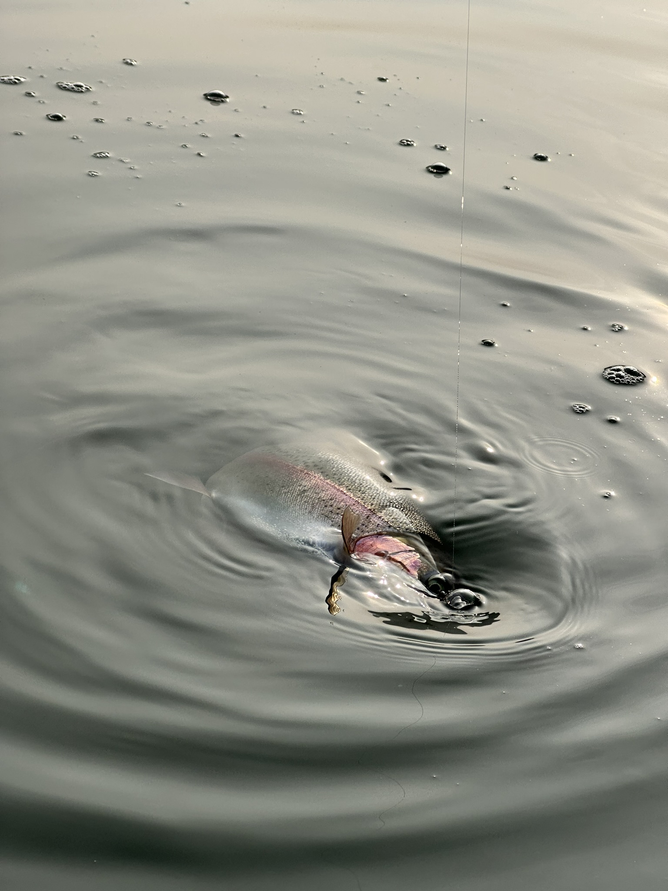
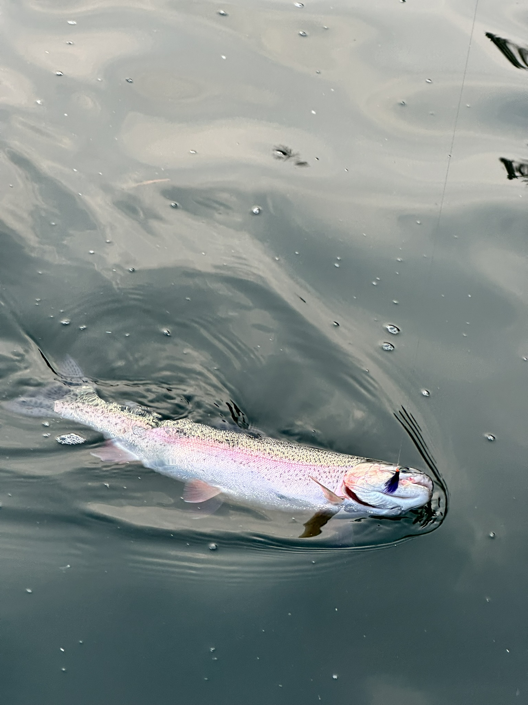
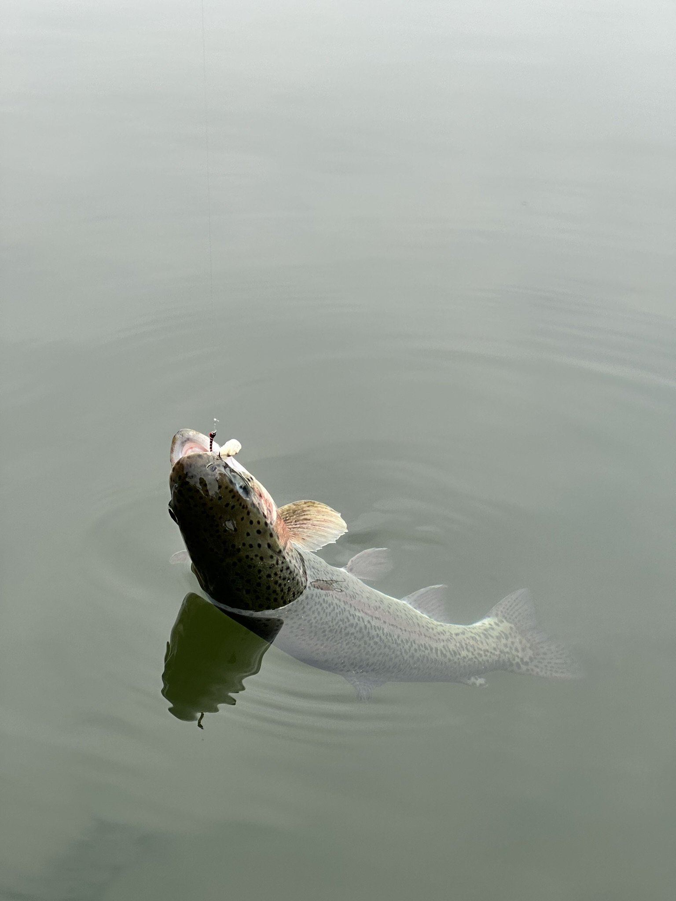
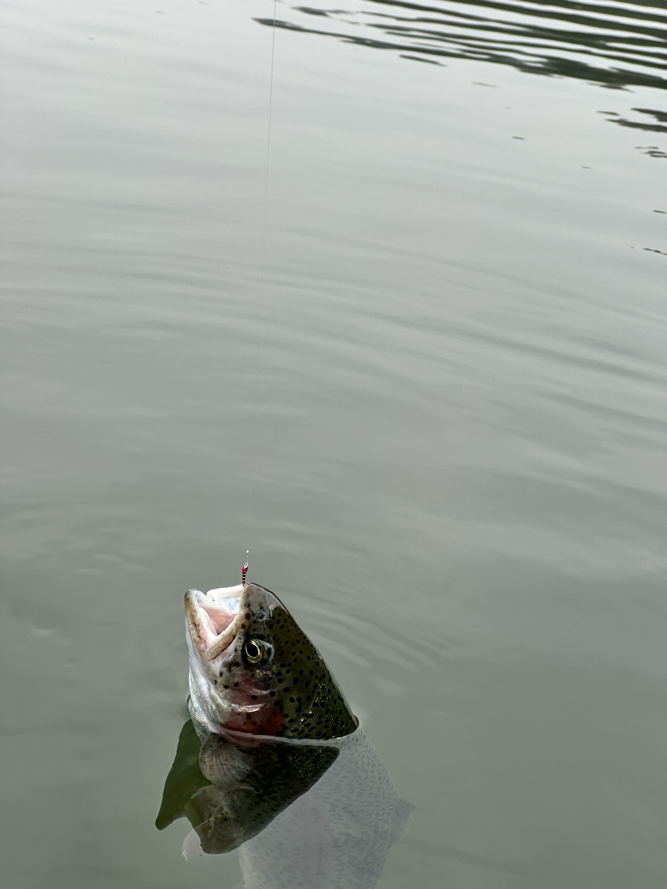
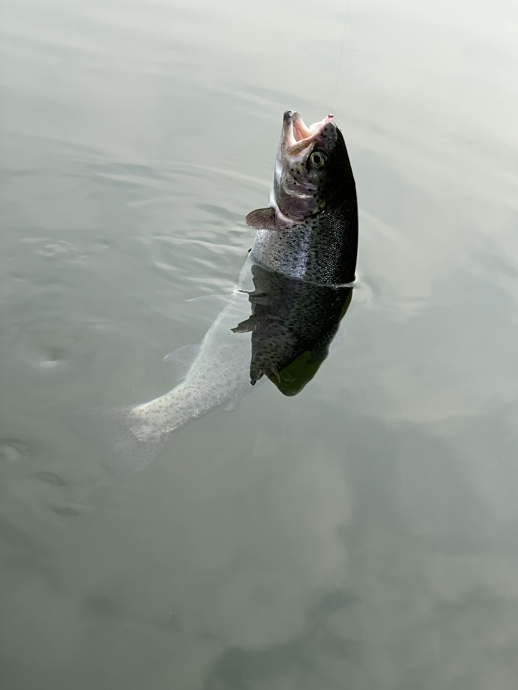
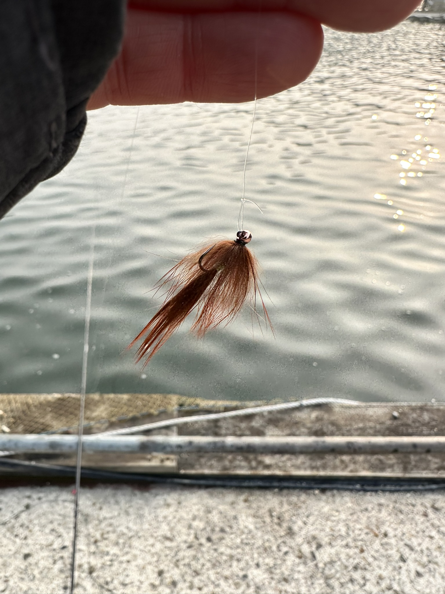
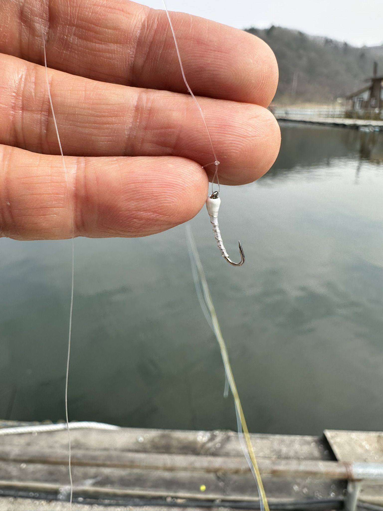
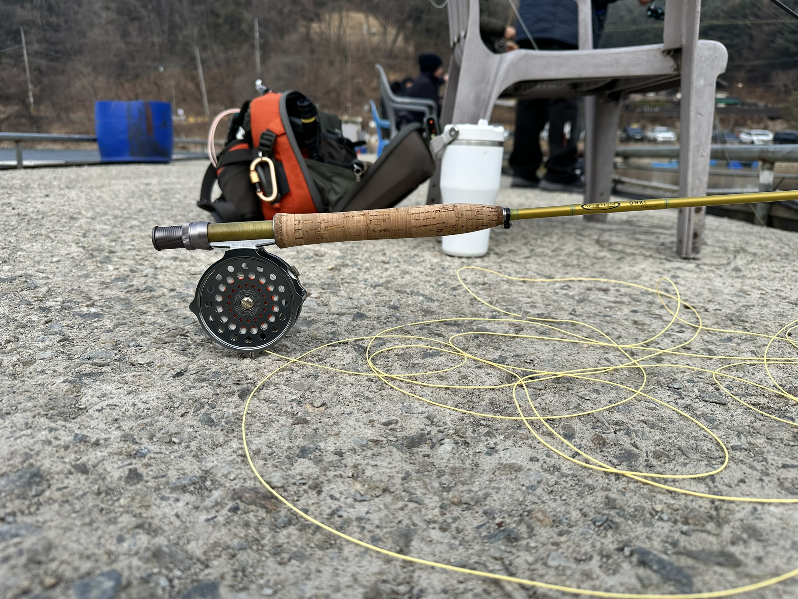

■ Jeff의 전략 분석 서머리
이번 출조의 핵심은 단순한 비거리 확보가 아닌, '수평에서 수직으로의 변화'를 만들어낸 액션에 있었습니다. 바닥을 긁어오던 플라이가 수평적 위치에서 수직으로 움직임이 꺾이는 구간에서, 송어의 반응이 유독 집중됩니다.
송어도 집중!! 나도 집중!!
🐟 오늘의 조과 갤러리
클릭하면 크게 볼 수 있습니다.





🎯 수평에서 수직으로 상승하는 슬로프 공략
입질이 집중된 'Rising Action' 구간의 메커니즘을 확인하세요.
대기 중...
1. 수평 유지 (Bottom)
바닥층을 따라 수평으로 초저속 리트리브를 하며 추격을 유도합니다.
2. 변화의 지점 (Corner)
수평 이동이 끝나고 슬로프의 경사를 만나는 변곡점입니다.
3. 수직 상승 (HIT)
수직으로 솟구치는 'Rising Action'에 송어가 본능적으로 반응합니다.
🪰 오늘의 패턴
실제 사용한 플라이 패턴들입니다. 클릭하면 크게 볼 수 있습니다.

MVP Pattern
White Chironomid
바닥 ~ 슬로프 수직 상승 구간 전용
White MVP

Sub Pattern
Chironomid Larva
사료타임 마이크로 님핑 활약
Feeding Frenzy

Support Pattern
Black Leech
바닥 수평 리트리브 보조
Bottom Game

🛠️ Gear Profile
Main
메인 채비 (Bottom Game)
Rod
SCOTT CENTRIC 690-4
Line
SA Sonar Titan 3D i/3/5 WF6S
Sub / Test
서브 테스트 채비 (Finesse)
Rod
Vision Onki 3100-4
Line
Rio Elite Technical Trout WF4F
🎨 컬러별 반응도
White 컬러에 대한 압도적인 반응 확인
🐟
🔥 우당탕탕 사료타임
Situation
사료 투입 후 표층 활성도 폭발
Winning Pattern
Chironomid Larva (Micro Nymphing)
SMOOTH OPERATOR 활약
Technical Trout Line의 부드러운 턴오버가 근거리 표층 님핑에서 정교함을 더해, 사료 타임의 짧고 강렬한 기회를 완벽하게 수확했습니다.
FEEDING FRENZY